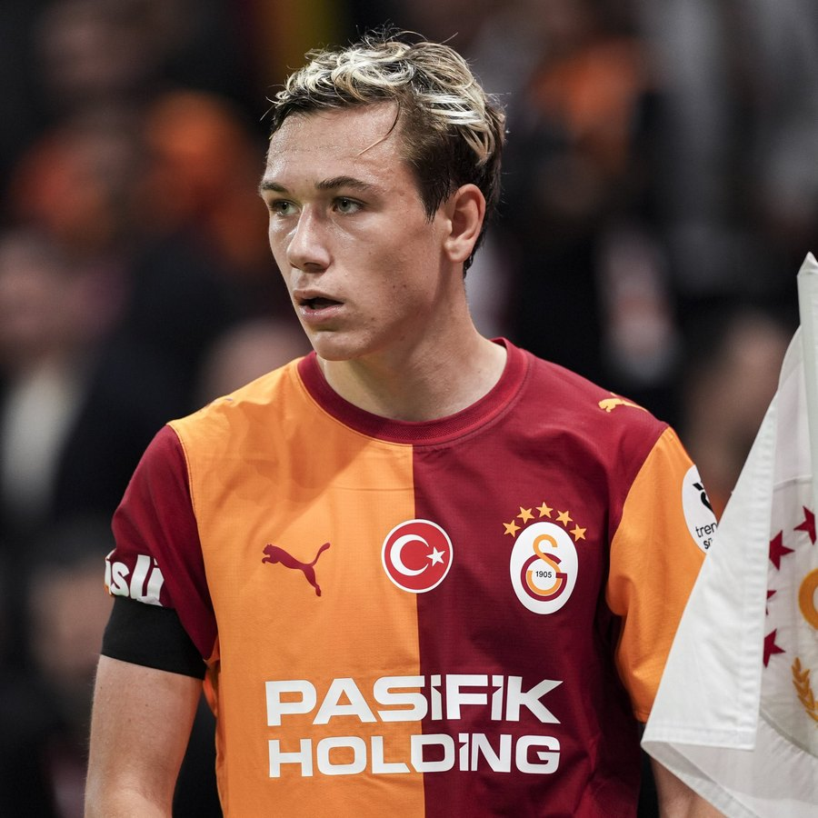

Золотой мальчик Стамбула
«Галатасарай» обыграл «Штутгарт» со счётом 2:0. Батраков забил на 12-й и 15-й минутах — дубль в стартовые четверть часа. УЕФА признал его игроком матча.
В Лиге чемпионов у него уже 4 гола в 4 матчах. Fanatik называет его «золотым мальчиком».
2гола матча
4/4голы / матчи ЛЧ
MOTMУЕФА